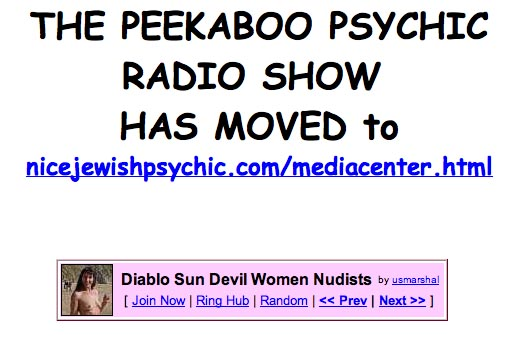

Project Moonstruck, 1952, CIA: Electronic implants in brain and teeth Targeting: Long range Implanted during surgery or surreptitiously during abduction Frequency range: HF - ELF transceiver implants Purpose: Tracking, mind and behavior control, conditioning, programming, covert operations Functional Basis: Electronic Stimulation of the Brain, E.S.B.

Project MK-ULTRA, 1953, CIA: Drugs, electronics and electroshock Targeting: Short range Frequencies: VHF HF UHF modulated at ELF Transmission and Reception: Local production Purpose: Programming behavior, creation of "cyborg" mentalities Effects: narcoleptic trance, programming by suggestion Subprojects: Many. Pseudonym: Project Artichoke Functional Basis: Electronic Dissolution of Memory, E.D.O.M.
Project Orion, 1958, U.S.A.F: Drugs, hypnosis, and ESB Targeting: Short range, in person Frequencies: ELF Modulation Transmission and Reception: Radar, microwaves, modulated at ELF frequencies Purpose: Top security personnel debreifing, programming, insure security and loyalty Pseudonym: "Dreamland"
![There is a thread running through modern American history, a thin red cord that weaves in and out of the shifting facades of reason and respectability that mask the brutal machinery of power. At certain rare moments the thread flashes into sight, emerging from the chaotic jumble of unbearable truth and life-giving illusion that makes up human reality. It appears, bears witness, then vanishes again, forgotten behind the next facade.
It's a thread that runs from horrified young intelligence operatives stumbling into the death camps of Nazi Germany to hardened agents running assassination programs in the jungles of Vietnam to august men of state building a shadow government with secret decrees authorizing tyranny, murder, torture and deceit. It's a thread of moral corruption, corruption by an idea, a temptation, a perversion of reason, the whisper of evil that says: 'The end justifies the means.'
That thread fetched up briefly again earlier this month, then was buried, literally, in a Maryland grave. The family of Frank Olson laid his exhumed remains to rest, closing the book on their half-century of struggle to find out why he died so violently in the hands of the government he had served--and whose deepest secrets he had guarded.
Frank's son, Eric, believes he knows the answer now: his father was murdered to keep the thread from sight, to 'protect' the American people from the knowledge that their own government had taken up and extended Nazi experiments on mind control, psychological torture and chemical warfare--and that it was conducting these experiments as the Nazis did, on unwilling subjects, on captives and 'expendables,' even to the point of 'termination.'
Frank Olson was a CIA scientist at Fort Detrick, Maryland, the Army's biological weapons research center. Ostensibly he was a civilian employee of the Army; his family didn't know his true employer. Olson worked on methods of spreading anthrax and other toxins; some of his colleagues were involved in mind control drugs and torture techniques. But his life within the charmed circle of the American intelligence elite would unravel with dizzying speed in just a few months in 1953.
It began in the summer of that year, when Olson--increasingly troubled by his own and his colleague's work--made several trips to Europe, to investigate secret American-British research centers in Germany. There he found the CIA was testing 'truth serums' and other torture drugs on 'expendables,' including captured Russian agents. He told a British colleague that he had witnessed 'horrors' there. And it called into starkest question his own work on biochemical weapons. He came home a changed man, troubled, morose. He told his wife he wanted to leave government service.
But it was too late: the brutal machinery was already grinding. His British colleague told his own superiors about Olson's concerns; they in turn informed the CIA that Olson was now a 'security risk.' Not long after his return, Olson was given the LSD. Then he was flown to New York, ostensibly for psychiatric treatment, at the hands of a CIA doctor--who prescribed whiskey and pills. Then he was taken to a CIA magician--yes, a magician--who apparently tried to hypnotize him for interrogation.
Finally he checked into a cheap hotel--with a CIA handler, Robert Lashbrook, in tow. Olson called his wife, told her he was feeling better and would be home the next day. But that night, he was found dead on the street, 10 floors below. The handler said that Olson had apparently thrown himself through the closed window in a suicidal fit. The government told the family it was simply a tragic suicide. They didn't mention the LSD--or the fact that Olson worked for the CIA.
It would take Eric Olson 49 years to piece together as much of the truth as we are ever likely to know about what happened that night. But first would come a false dawn, a cruel trick played on the family by cynical operators in Ford Administration, who used a screen of half-truth and deliberate falsehood to divert the Olsons--and the nation--from the darkest tangles of the thread. Two of those operators would would work the thread--play upon it, thrive on it, hold hard to its damp crimson stain--to rise from the obscurity of White House functionaries to positions of colossal, world-shaking power:
Dick Cheney and Donald Rumsfeld.
Keeping the Faith
Washington, 1975. It was a long hot summer of discontent in the White House. The unelected president, Gerald Ford--who'd taken office after the resignation of Richard Nixon--was raging. Every day seemed to bring fresh horrors from the Congressional committees investigating America's intelligence agencies. Assassination plots, terrorist acts, coups, secret armies, subversion of allied governments, Mafia connections, torture, press manipulation, domestic surveillance--the revelations were endless, a bottomless pit of corruption and criminality being dredged up by the House and Senate panels.
Where was their sense of duty, the code of omerta that had for so long protected those who toil in the shadows, who do the dirty work to keep America fat and safe and happy? What right did these mere senators and representatives have to tell the people--the big dumb dazed mobocracy out there--the truth about what their leaders were doing in their name? They were like children, they could never understand the higher wisdom that guided the elites. Oh, it was a far cry from the old days, back on the Warren Commission, when a good soldier like Jerry Ford knew just what to do: you accepted whatever the agencies told you, and you steered investigations away from anything that might break the code and pierce the shadows.
So Ford seethed. What the hell is wrong over there at the CIA, he complained to his chief of staff, Donald Rumsfeld. Why couldn't Bill Colby, the director, keep a lid on things? Colby had even come clean about Operation Phoenix, for Christ's sake. More than 20,000 Vietnamese murdered in the CIA-run program--did Joe Lunchbucket really need to know about that?
What next? Are they going to find about Reinhard Gehlen, too: the Nazi spy who joined the CIA and recruited thousands of Hitler's best and brightest--including Klaus Barbie and a cadre of SS veterans--to work for the Agency? Sure, it would look bad, but come on: Gehlen was championed by Allen Dulles himself--the founding father of the CIA, the hotshot lawyer who kept Prescott Bush's name out of the papers when Pres was caught trading with the Nazis in 1942. Dulles and those Yale boys knew what was best--but try explaining that to some poor schmuck whose father got killed at Normandy or Auschwitz or some other godforsaken hole, eh?
As it happened, the 'Gehlen Organization' stayed secret for another 26 years. But in July 1975, Ford had still more worries. A top White House aide, Dick Cheney, sent a memo to Rumsfeld, warning him about an upcoming lawsuit. The family of Frank Olson had found out--through the Congressional investigations--that he had been secretly drugged by the CIA not long before he took that fall from the hotel window. Now they were suing the government for damages.
The lawsuit could be bad business, Cheney told Rumsfeld. 'It might be necessary to disclose highly classified national security information' during the trial. That would include the truth about Olson: the CIA connection, biochemical weapons, the mind-control and torture experiments based on Nazi death-camp 'research,' and the Agency fingerprints all over Olson's last days in New York City. The case might even reveal the existence of special 'CIA Assassination Manuals,' like the one issued in the year of Olson's death, 1953, stating: 'The most efficient accident, in simple assassinations, is a fall of 75 feet or more onto a hard surface. Elevator shafts, stairwells, unscreened windows and bridges will serve. [In some cases], it will usually be necessary to stun or drug the subject before dropping him.'
Such revelations had to be avoided at all costs. Rumsfeld and Cheney urged Ford to make a settlement before the trial started. To avoid the courts entirely, they would arrange a private bill in Congress to give the family some cash. The deal would be sweetened by private audiences with both Ford and Colby, apologizing for the CIA's past 'mistakes,' and promising 'full disclosure' of all the facts, so the family could at last find peace.
And so it was done. And it was all a lie--beyond the bare fact, already unearthed by Congress, that Olson had been drugged by the CIA. The family got 17 minutes in the Oval Office with Ford--who apologized for the government's indirect involvement in Olson's death--that LSD test gone awry. Rogue elements, you know; unauthorized activity. Shouldn't have happened; never happen again. This was followed by a meeting with Colby, who handed over a thick file: the CIA's 'complete' investigation of the Olson affair--so complete that it forgot to mention that Olson was a CIA official. Or that his colleagues considered him a 'security risk.' Little things like that.
Thus began the second cover-up. It took Eric Olson another 27 years to piece together the story, from obscure archives, through lucky accidents, and strained meetings with old CIA hands, who let fall dribs and drabs of the truth. He was even forced to exhume his father's body: a gruesome process that revealed the original 1953 post-mortem had also been a lie.
That examination had simply confirmed the cover story: poor sap had flung himself through the glass and splattered on the sidewalk below. No autopsy needed. Close the coffin--the body is too busted-up for the family to see--and close the case. But the second examination, decades later, carried out by forensic experts, revealed the truth. There were no marks on the well-preserved cadaver consistent with a self-propelled flight through the window: no cuts on the face or arms. There was, however, a cranial injury entirely consistent with a blow to the head--delivered before the fall.
Earlier this year, the Cheney-Rumsfeld memos came to light, confirming that the Olsons had been deliberately lied to in 1975. It helped fill in some of the remaining pieces of the scattered jigsaw puzzle that was his father's death--and had become Eric's life. And although the centerpiece of the puzzle--the fateful moments in that hotel room, before Frank Olson went through the glass--remains forever absent, the picture was as complete as it would ever be, Eric decided. And so he buried his father, again, in the dark Maryland earth.
But Ford, Rumsfeld and Cheney had kept the faith back in those dangerous days of 1975. They had honored omerta. Colby was not so lucky. For his sins--his 'weakness' in allowing a few spears of sunlight into the shadows--he was summarily dismissed a few months later. He was replaced by a man who also lived by the code, who would keep the precious Agency--and all its Gehlens, its torturers, its dopers, its shooters--safe from the mobocracy, the ignorant rabble with their pathetic fairy-tale notions about democracy, justice, law and honor. He would guard the shadow world so well that one day the headquarters of the CIA would proudly bear his name:
George Herbert Walker Bush.](../busch_foto/afraidofadvertizing.jpg)
MK-DELTA, 1960, CIA: FIne-tuned electromagnetic subliminal programming Targeting: Long Range Frequencies: VHF HF UHF Modulated at ELF Transmission and Reception: Television antennae, radio antennae, power lines, mattress spring coils, modulation on 60 Hz wiring. Purpose: programming behavior and attitudes in general population Effects: fatigue, mood swings, behavior dysfunction and social criminality, mood swings Pseudonym: "Deep Sleep", R.H.I.C.
PHOENIX II, 1983, U.S.A.F, NSA: Location: Montauk, Long Island Electronic multi-directional targeting of select population groups Targeting: Medium range Frequencies: Radar, microwaves. EHF UHF modulated Power: Gigawatt through Terawatt Purpose: Loading of Earth Grids, planetary sonombulescence to stave off geological activity, specific-point earthquake creation, population programming for sensitized individuals Pseudonym: "Rainbow", ZAP
TRIDENT, 1989, ONR, NSA: Electronic directed targeting of individuals or populations Targeting: Large population groups assembled Display: Black helicopters flying in triad formation of three Power: 100,000 watts Frequency: UHF Purpose: Large group management and behavior control, riot control Allied Agencies: FEMA Pseudonym: "Black Triad" A.E.M.C
RF MEDIA, 1990, CIA: Electronic, multi-directional subliminal suggestion and programming Location: Boulder, Colorado (Location of main cell telephone node, national television synchronization node) Targeting: national population of the United States Frequencies: ULF VHF HF Phase modulation Power: Gigawatts Implementation: Television and radio communications, the "videodrome" signals Purpose: Programming and triggering behavioral desire, subversion of psychic abilities of population, preparatory processing for mass electromagnetic control Pseudonym: "Buzz Saw" E.E.M.C.
TOWER, 1990, CIA, NSA: Electronic cross country subliminal programming and suggestion Targeting: Mass population, short-range intervals, long-range cumulative Frequencies: Microwave, EHF SHF Methodology: Cellular telephone system, ELF modulation Purpose: Programming through neural resonance and encoded information Effect: Neural degeneration, DNA resonance modification, psychic suppression Pseudonym: "Wedding Bells"
HAARP, 1995, CIA, NSA, ONR: Electromagnetic resonant induction and mass population control Location: Gakona, Alaska Frequencies: Atmospheric phase-locked resonant UHF VHF Potential: DNA code alteration in population and mass behavior modification Power: Giga-watt to Tera-watt range Step-Down reflective frequencies: Approx 1.1 GHz, Human DNA resonant frequency, cellular system phase-lock
PROJECT CLEAN SWEEP, 1997, 1998, CIA, NSA, ONR: Electromagnetic resonant induction and mass population control Location: Nationwide Frequencies: Emotional wavelengths, data gathering through helocopter probes following media events - rebroadcast in order to restimulate population emotional levels for recreation of event scenarios. Ref: LE#108, March 1998 Potential: Mass behavior modification Power: Unknown. Possibly rebroadcast through GWEN network or cellular tower frequencies, coordinated from NBS in Colorado.